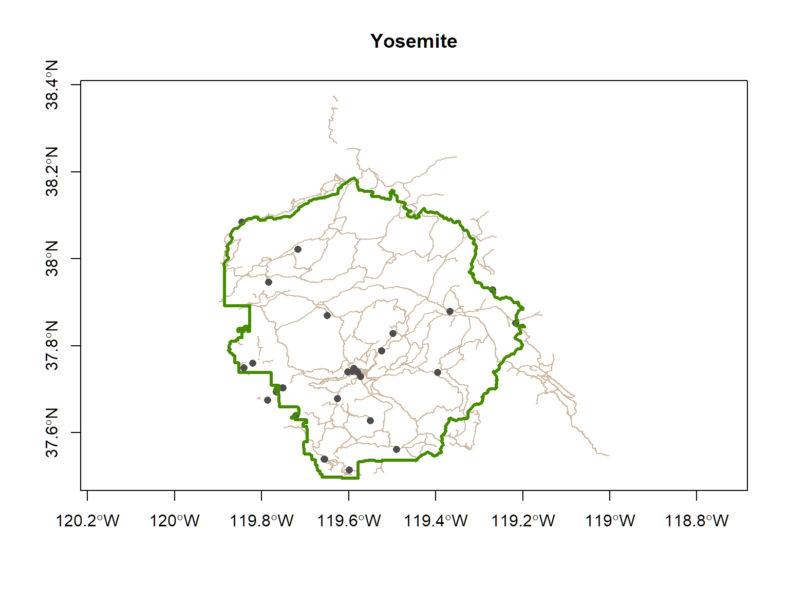
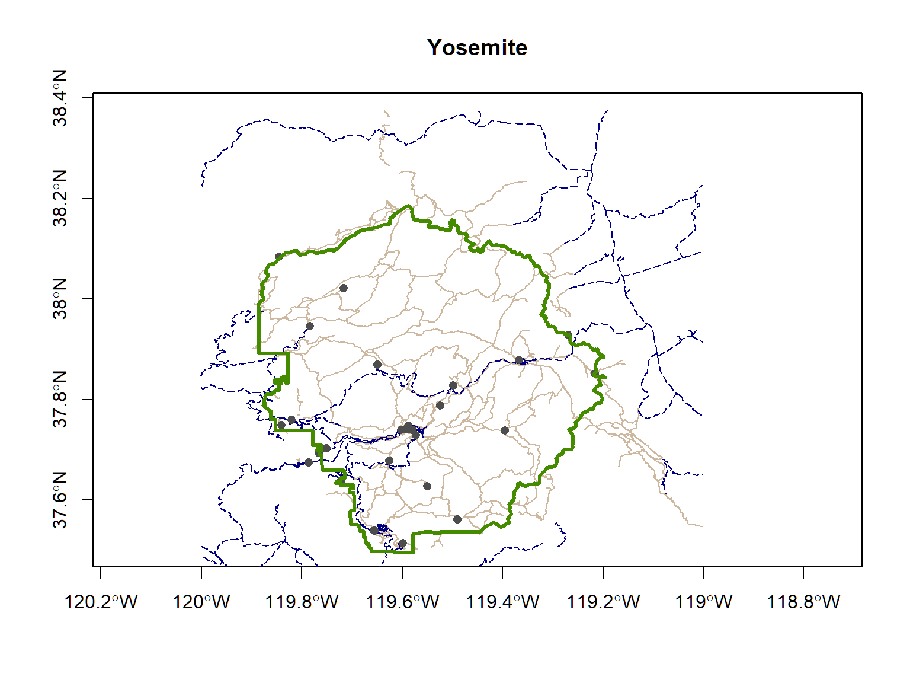
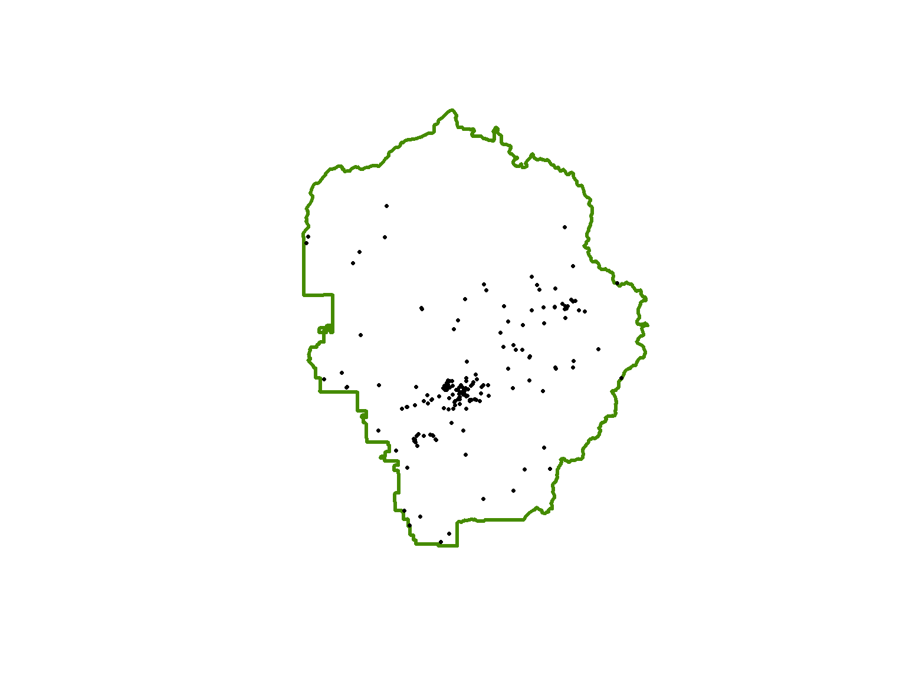

Spatial Data Analysis with R
Working with sf Objects
Projections
Projections are particularly important whenever you want to:
- overlay layers in a plot (R does not reproject on the fly)
- use geometric measurements, like distance or area
- do spatial queries or join layers
The more generic term for projections as is Coordinate Reference System (CRS).
CRS also includes unprojected geographic coordinates (longitude & latitude).
A CRS has three parts:
- a mathematical representation of the Earth (datum)
- a 2D to 3D transformation model (projected CRS’s)
- an origin
CRS functions
All sf objects are able to store projection info.
st_read() imports the CRS info from standard GIS file formats
sf_crs() creates, views, or assigns the CRS
sf_transform() (re)projects sf objects into a different crs
Common epsg numbers
4326. Geographic, WGS84 (default for lon/lat)
4269. Geographic, NAD83 (USA Fed agencies like Census)
5070. USA Contiguous Albers Equal Area Conic
3310. CA ALbers Equal Area
32610. UTM Zone 10, WGS84 (Northern Cal)
32611. UTM Zone 11, WGS84 (Southern Cal)
3857. Web Mercator (web maps)
The one-stop shop for finding proj4 strings and epsg numbers is http://www.spatialreference.org. (Google usually works also).
Reference code for your convenience:
View or Assign the CRS
View the CRS of a sf object:
## Coordinate Reference System:
## EPSG: 26911
## proj4string: "+proj=utm +zone=11 +ellps=GRS80 +towgs84=0,0,0,0,0,0,0 +units=m +no_defs"
Occasionally, you have a sf object that doesn’t have a CRS recorded. This is most common when you are importing a CSV file and are turning it into a sf object. In thse cases, you can use st_crs() to assign the CRS.
Note: this is not the same as projecting data. You’re simply telling it the CRS.
Projecting Data
You can project data from one CRS to another with:
st_transform(sf_object, new_crs)
Let’s ‘unproject’ the Yosemite trails layer from UTM to geographic coordinates.
Now that the trails are in geographic coordinates, we can overlay them on the boundary and historical points.
plot(st_geometry(yose_trails_ll), asp=1, col="bisque3", axes=T, main="Yosemite")
plot(st_geometry(yose_hp), col="gray30", pch=16, add=TRUE)
plot(st_geometry(yose_bnd), col=NA, border="chartreuse4", lwd=3, add=TRUE)

Import the roads and add those to your map.
[Solution]
gdb_fn <- "./data/yose_roads.gdb"
file.exists(gdb_fn)
yose_roads_utm <- st_read(gdb_fn, layer="Yosemite_Roads")
yose_roads_ll <- st_transform(yose_roads_utm, 4326)
plot(st_geometry(yose_trails_ll), asp=1, col="bisque3", axes=T, main="Yosemite")
plot(st_geometry(yose_roads_ll), col="navyblue", lwd=1, lty=5, add=TRUE)
plot(st_geometry(yose_hp), col="gray30", pch=16, add=TRUE)
plot(st_geometry(yose_bnd), col=NA, border="chartreuse4", lwd=3, add=TRUE)
## [1] TRUE
## Reading layer `Yosemite_Roads' from data source `C:\Workshops\R-Spatial\rspatial_mod\outputs\rspatial_scgis19\docs\data\yose_roads.gdb' using driver `OpenFileGDB'
## Simple feature collection with 823 features and 41 fields
## geometry type: MULTILINESTRING
## dimension: XYZ
## bbox: xmin: 234658.1 ymin: 4139484 xmax: 324852.6 ymax: 4250252
## epsg (SRID): 26911
## proj4string: +proj=utm +zone=11 +ellps=GRS80 +towgs84=0,0,0,0,0,0,0 +units=m +no_defs

Data frame methods
Recall that sf objects are essentially data frames with a geometry column thrown in. This means we can use standard data frame syntax.
Review of Data Frame Methods
Recall these common data frame commands.
Subsetting Data Frames
One of the most common things you do with data frames is selecting specific rows and/or columns. This is commonly done with square bracket notation:
my_dataframe[rows, columns]
Where rows is a vector of integers of the row numbers you want, or a vector of logical values (TRUE / FALSE) for the rows.
Likewise columns can be a vector of integers, logicals, or column names.
A better way: dplyr
Part of the tidyverse, dplyr provide an alternative way to manipulate or ‘munge’ data frames.
The key to making this easier is the use of piping syntax.
fun_a() %>% fun_b() %>% fun_c() %>% …
Piping allows the results of one function to be passed to the next, so a string of commands can be combined like a sentence.
Examples:
## Sepal.Length Sepal.Width Petal.Length Petal.Width Species
## 1 7.1 3.0 5.9 2.1 virginica
## 2 7.6 3.0 6.6 2.1 virginica
## 3 7.3 2.9 6.3 1.8 virginica
## 4 7.2 3.6 6.1 2.5 virginica
## 5 7.7 3.8 6.7 2.2 virginica
## 6 7.7 2.6 6.9 2.3 virginica
## 7 7.7 2.8 6.7 2.0 virginica
## 8 7.2 3.2 6.0 1.8 virginica
## 9 7.2 3.0 5.8 1.6 virginica
## 10 7.4 2.8 6.1 1.9 virginica
## 11 7.9 3.8 6.4 2.0 virginica
## 12 7.7 3.0 6.1 2.3 virginica
## Sepal.Length Sepal.Width Petal.Length Petal.Width Species
## 1 7.1 3.0 5.9 2.1 virginica
## 2 7.6 3.0 6.6 2.1 virginica
## 3 7.3 2.9 6.3 1.8 virginica
## 4 7.2 3.6 6.1 2.5 virginica
## 5 7.7 3.8 6.7 2.2 virginica
## 6 7.7 2.6 6.9 2.3 virginica
## 7 7.7 2.8 6.7 2.0 virginica
## 8 7.2 3.2 6.0 1.8 virginica
## 9 7.2 3.0 5.8 1.6 virginica
## 10 7.4 2.8 6.1 1.9 virginica
## 11 7.9 3.8 6.4 2.0 virginica
## 12 7.7 3.0 6.1 2.3 virginica
## Species Sepal.Length
## 1 virginica 7.1
## 2 virginica 7.6
## 3 virginica 7.3
## 4 virginica 7.2
## 5 virginica 7.7
## 6 virginica 7.7
## 7 virginica 7.7
## 8 virginica 7.2
## 9 virginica 7.2
## 10 virginica 7.4
## 11 virginica 7.9
## 12 virginica 7.7
## # A tibble: 3 x 3
## Species avg_petal_length avg_petal_width
## <fct> <dbl> <dbl>
## 1 setosa 1.46 0.246
## 2 versicolor 4.26 1.33
## 3 virginica 5.55 2.03
When passed regular data frames, dplyr functions return tibble objects, which are essentially data frames with a couple of minor tweaks.
dplyr functions work with sf objects natively. Pass a sf object and you get a sf object back! For numeric analysis you can ‘drop’ the geometry with st_drop_geometry().
Keyboard shortcut to insert %>%: ctrl + shift + m
For more examples, see the dplyr Cheat Sheet
For each species in iris, compute the minimum and maximum sepal length.
[Solution]
## # A tibble: 3 x 3
## Species min_sep_len max_sep_len
## <fct> <dbl> <dbl>
## 1 setosa 4.3 5.8
## 2 versicolor 4.9 7
## 3 virginica 4.9 7.9
- Use the following code to import the Yosemite Points of Interest (Shapefile)
- What are the top 5 most common types of points (see the POITYPE column)?
Hint: use these functions in your expression:
group_by()
select()
st_drop_geometry()
summarise()
top_n()
[Solution]
## # A tibble: 5 x 2
## POITYPE n
## <fct> <int>
## 1 Campsite 1219
## 2 Lodging 789
## 3 Parking Lot 259
## 4 Private Residence Rental 122
## 5 Restroom 97
Creating a point layer from a CSV file
Importing a CSV File
An easy way to import a csv file is the ‘Import Dataset’ button in RStudio. This tool generates all the arguments for the read.csv() function.
Let’s import the Yosemite Missing People csv file.
## [1] TRUE
## [1] "ï..X" "Y" "OBJECTID_1" "OBJECTID" "Georef_Unc"
## [6] "Distance" "Type" "Lat" "Long" "Extent"
## [11] "CaseNumber" "SARNumber" "IncidYear" "DateTimeLa" "DateTimeIn"
## [16] "DateTimeSu" "DateTIme_1" "ContactMet" "EcoRegionD" "EcoRegio_1"
## [21] "IncidType" "NumberofSu" "GroupDynam" "SubjectCat" "SubSex"
## [26] "SubAge" "IPPType" "IPPClassif" "IncidContr" "IncidOutco"
## [31] "Scenario" "SubjMedInj" "RescueMeth" "LostPerson" "IPP_GR_Loc"
## [36] "IPP_GR_Typ" "IPP_GR_Pat" "IPP_GR_Not" "Intended_D" "FindFeatur"
## [41] "Found_GR_L" "Found_GR_T" "Found_GR_P" "Found_GR_N" "Motorized_"
## [46] "Incident_N" "TotalTimeM" "TotalSearc" "GlobalID"
## [1] 213
## ï..X Y OBJECTID_1 OBJECTID Georef_Unc Distance Type
## 1 -119.6632 37.66355 1 1 336.3710 1340.2605 IPP
## 2 -119.8099 37.76910 2 2 526.3630 1293.0631 IPP
## 3 -119.5958 37.74595 3 3 56.3650 0.0000 IPP
## 4 -119.5599 37.75631 4 4 126.3640 1760.0421 IPP
## 5 -119.5937 37.74561 5 5 41.3650 357.1429 IPP
## 6 -119.6064 37.74521 6 6 846.5152 1823.4372 IPP
## Lat Long Extent CaseNumber SARNumber IncidYear
## 1 37.66355 -119.6632 310 20090248 2009004 2009
## 2 37.76910 -119.8099 500 20090652 2009014 2009
## 3 37.74595 -119.5958 30 20090940 2009024 2009
## 4 37.75631 -119.5599 100 20091134 2009029 2009
## 5 37.74561 -119.5937 15 20091252 2009036 2009
## 6 37.74521 -119.6064 15 20091345 2009042 2009
## DateTimeLa DateTimeIn
## 1 2009-02-01T00:00:00.000Z 2009-02-01T00:00:00.000Z
## 2 2009-03-30T00:00:00.000Z 2009-03-30T00:00:00.000Z
## 3 2009-04-25T00:00:00.000Z 2009-04-25T00:00:00.000Z
## 4 2009-05-12T00:00:00.000Z 2009-05-12T00:00:00.000Z
## 5 2009-05-19T00:00:00.000Z 2009-05-19T00:00:00.000Z
## 6 2009-05-23T00:00:00.000Z 2009-05-23T00:00:00.000Z
## DateTimeSu DateTIme_1 ContactMet
## 1 2009-02-01T00:00:00.000Z 2009-02-01T00:00:00.000Z Subject Cell Phone
## 2 2009-03-30T00:00:00.000Z 2009-03-30T00:00:00.000Z Reported Missing
## 3 2009-04-25T00:00:00.000Z 2009-04-25T00:00:00.000Z Reported Missing
## 4 2009-05-12T00:00:00.000Z 2009-05-12T00:00:00.000Z Subject Cell Phone
## 5 2009-05-19T00:00:00.000Z 2009-05-19T00:00:00.000Z Reported Missing
## 6 2009-05-23T00:00:00.000Z 2009-05-23T00:00:00.000Z Reported Missing
## EcoRegionD EcoRegio_1 IncidType
## 1 Temperate M260 Mediterranean Regime Mountains Search
## 2 Temperate M260 Mediterranean Regime Mountains Separated Party
## 3 Temperate M260 Mediterranean Regime Mountains Overdue
## 4 Temperate M260 Mediterranean Regime Mountains Search
## 5 Temperate M260 Mediterranean Regime Mountains Separated Party
## 6 Temperate M260 Mediterranean Regime Mountains Overdue
## NumberofSu GroupDynam SubjectCat SubSex SubAge IPPType
## 1 1 Solo Subject Mental Retardation Male 31 LKP
## 2 1 Solo Subject Hiker Male 0 PLS
## 3 1 Solo Subject Child (13-15) Male 14 LKP
## 4 1 Solo Subject Hiker Male 35 LKP
## 5 1 Solo Subject Child (4-6) Male 6 PLS
## 6 1 Solo Subject Hiker Male 29 PLS
## IPPClassif IncidContr IncidOutco Scenario
## 1 Locality Description (Added) Darkness Subject Found Alive Lost
## 2 Woods Unknown Subject Found Alive Separated
## 3 Building Unknown Subject Found Alive Overdue
## 4 Locality Description (Added) Snow/Ice Subject Found Alive Lost
## 5 Trailhead Unknown Subject Found Alive Separated
## 6 Trail Unknown Subject Found Alive Overdue
## SubjMedInj RescueMeth LostPerson IPP_GR_Loc
## 1 None Snow Machine Route Traveling Badger Pass Ski Area
## 2 None Walkout Route Traveling Tuolumne Grove
## 3 None Other Unknown Lower Falls Restroom
## 4 None Helicopter Unknown North Dome
## 5 None Other Not Lost Lower Falls Trailhead
## 6 None Other Unknown Upper Yosemite Falls Trail
## IPP_GR_Typ IPP_GR_Pat
## 1 NEAR A FEATURE Null
## 2 FEATURE (NAMED PLACE) Null
## 3 NEAR A FEATURE Null
## 4 FEATURE (NAMED PLACE) Null
## 5 FEATURE (NAMED PLACE) Null
## 6 OFFSET ALONG A PATH Trail
## IPP_GR_Not
## 1 Subject's last known point was described as "Near Badger Pass Ski Area"
## 2 PLS - in the Tuolumne Grove
## 3 Subject last seen at Upper Pines Campground but their bike was found at the Yosemite Yosemite Falls Restroom (LKP)
## 4 LKP - North Dome
## 5 Hasty search team sent to Lower Falls Trailhead (plotted trailhead nead Lower Falls Bus Stop)
## 6 PLS - 15 minutes up Yosemite Falls Trail (plotted at half a mile up trail)
## Intended_D FindFeatur Found_GR_L
## 1 Unknown Forest/woods Eagle Chair Lift
## 2 Unknown Road Tuolumne Grove Parking
## 3 Top of Yosemite Falls Structure Lower Falls Restroom
## 4 Loop - back to Yosemite Valley Forest/woods Indian Ridge
## 5 Unknown Structure Yosemite Lodge
## 6 Top of Yosemite Falls Road Bank 3 Way
## Found_GR_T Found_GR_P
## 1 OFFSET DIRECTION Null
## 2 FEATURE (NAMED PLACE) Null
## 3 NEAR A FEATURE Null
## 4 NEAR A FEATURE Null
## 5 FEATURE (NAMED PLACE) Null
## 6 NEAR A FEATURE Road
## Found_GR_N
## 1 Found just south of the top of the Eale Chair Lift at Badger Pass Ski at an elevation of approximately 8,200 ft
## 2 Found in the parking lot looking for his mother
## 3 Found at LKP after hike was complete
## 4 Found in the area of Indian Ridge, approximately 300 feet off the trail
## 5 Found at Yosemite Lodge room 4623
## 6 Found near the Bank3-Way intersection
## Motorized_
## 1 0
## 2 0
## 3 0
## 4 0
## 5 0
## 6 0
## Incident_N
## 1 Subject was snowshoeing, became disoriented, and called for help. Subject described as mentally challenged.
## 2 Subject described as teenage male; found in under half an hour from reported missing time
## 3 Subject hiked Yosemite Falls Trail and was found at his bike after being reported overdue
## 4 Subject hiked up Yosemite falls Trail and to North Dome; planned to hike back to the Valley via Snow Creek Trail but lost tral due to snow
## 5 Subject became separated from father and returned to his hotel room to wait for his return
## 6 Subject took shortcut off trail while hiking Upper Yosemite Falls Trail and became separated from hiking partner
## TotalTimeM TotalSearc GlobalID
## 1 18 1 083c9dbc-711f-4127-861d-b2f7b5bb0470
## 2 -19 -19 5f387c80-547a-4a46-9757-21bad561a810
## 3 5 0 690530d3-5221-4cda-94f9-0234ef59dcf5
## 4 15 1 21cb0a37-86e9-4907-a225-ad8d780aa961
## 5 1 1 96955e35-3bb0-4d39-8b87-36ff841601d4
## 6 5 1 03947759-aad3-428b-a6de-36cc57594c63
Convert a data frame to sf
To turn this into a sf object, we’ll use
st_as_sf(df, coords, crs)
where:
- df - the data frame
- coords - a character vector containing the names of the columns containing x and y coordinates
- crs - the coordinate reference system (an EPSG code or proj4 string)
## Coordinate Reference System:
## EPSG: 4326
## proj4string: "+proj=longlat +datum=WGS84 +no_defs"

Plot just those missing persons where the subject was a hiker. This is an example of an attribute query.
Hints:
- look at the ‘SubjectCat’ column
- use filter() from dplyr
- remember that tests for equality are case sensitive
[Solution]
Well Known Text
Let’s take a closer look at the geometry column:
## [1] "sfc_POINT" "sfc"
## Geometry set for 6 features
## geometry type: POINT
## dimension: XY
## bbox: xmin: -119.8099 ymin: 37.66355 xmax: -119.5599 ymax: 37.7691
## epsg (SRID): 4326
## proj4string: +proj=longlat +datum=WGS84 +no_defs
## First 5 geometries:
## POINT (-119.6632 37.66355)
## POINT (-119.8099 37.7691)
## POINT (-119.5958 37.74595)
## POINT (-119.5599 37.75631)
## POINT (-119.5937 37.74561)
sf uses a standard called “Well Known Text” (WKT) to encode the geometry. WKT is a very simple written representation of the ‘connect-the-dots’ vector data model.
|
Geometry
|
Sample WKT
|
|
point
|
POINT (2 4)
|
|
multipoint
|
MULTIPOINT (2 2, 3 3, 3 2)
|
|
linestring
|
LINESTRING (0 3, 1 4, 2 3)
|
|
polygon
|
POLYGON ((1 0, 3 4, 5 1, 1 0))
|
This means the features in a sf object can be a mix of points, lines, and polyons. The data class of the geometry column is therefore sfc (simple features collection).

The geometry column of a sf object does not have to be called ‘geometry’. You can view the column name by running attr(x, "sf_column") where x is a sf object.
Other sf properties
It’s often useful to view the metadata of a sf object. You can get the bounding box (aka extent) with st_bbox().
## xmin ymin xmax ymax
## 246416.2 4153717.3 301510.7 4208419.0
To extract the coordinates of a sf layer as a matrix, use st_coordinates().
## X Y
## 1 260859.4 4178493
## 2 264115.4 4158415
## 3 268276.8 4153717
## 4 268620.1 4178344
## 5 269052.6 4178870
## 6 270931.1 4179771
Convert a sp object into a sf object
Convert a sf object into a sp object
Summary and Next-Up
Today we saw how to:
- how to refer to known CRS’s
- view and assign projections to sf objects
- (re)project sf objects with st_transform()
- use dplyr functions for data munging and attribute queries
- import a csv file
- turn a data frame with coordinates into a sf object
- convert a sf object into a sp object and vice-versa
Next:
Geoprocessing